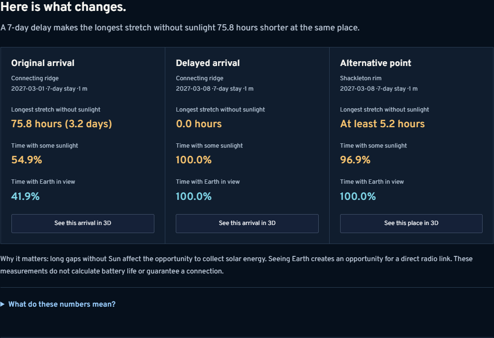

Team An0r4k · NASA Space Apps Challenge 2026 · Lunar Landing Site Navigator
When the landing date slips,
does the site still work?
At Malapert massif, raising the observer from 1 to 5 metres changes the longest darkness from 289 to 144 hours in the fixed 1 March–28 April 2027 worked example. Change height or arrival date. Inspect the consequence, then the evidence.
The problem
At the pole, one degree of terrain decides
The Sun skims the south-pole horizon. Distant ridges can block it. A high ridge can see it even when it sits below the local horizontal plane.
Our focus is fast, explainable comparison of sites and dates, with every number traceable to its source.
What we built
Change the arrival. Compare the consequences.
- Guided analysis (about 10 min) or Open Workspace, where every step is open at once.
- Start with three plain-language answers. Change a setting and see the consequence; inspect exact measurements and the arrival sky when needed.
- Surface sky: Sun and Earth at their true angular size above a 720-point terrain horizon.
- Faithful Mode keeps one physical clock. Free Mode freezes are labelled artificial.

The science
Published NASA data, computed offline
- Terrain: LOLA elevation models nested at 5 m, 80 m and 240 m.
- Horizon: 720 sight lines (Mazarico 2011, Barker 2021).
- Ephemerides: NAIF SPICE, DE440.
- Points: from published LOLA studies. They are not selected landing sites.
| Point | 1 m | 5 m |
|---|---|---|
| Connecting ridge | 132 h | 85 h |
| Shackleton rim | 231 h | 118 h |
| Nobile rim 1 | 217 h | 107 h |
| Malapert massif | 289 h | 144 h |
Show your work
How we checked the numbers
| Check | Target | Result |
|---|---|---|
| Sun and Earth vs JPL Horizons, 60 sampled directions | p95 < 0.01° | Agree at Horizons' printed 1e-6° precision1 |
| 5 m vs 80 m elevation datum | |median| < 2 m, no shift | 0.20–0.27 m, shift (0, 0)2 |
| Horizon range, 300 km vs full | < 0.01° | 0.000° |
| Barker 2021 class, 2024–2026, 1 m | > 0.70 | 0.783 and 0.708 |
| Permanently shadowed pixel | no direct Sun | 0 over 2024–2026 |
1 These sampled instants only; not a general proof of equality. 2 Target written after an exploratory run. Full record: Evidence page and data/validation.json.
Limits and links
Geometry, honestly labelled
- Earth line of sight is not a guaranteed radio link.
- Sunlight is not power, and darkness alone does not size a battery.
- The active dataset spans one calendar year before and after its UTC reference day. Daily refreshes are validated before publication; shorter events may be missed.
- AI assistants helped write the code. Every number comes from NASA data.
App Evidence and validation Credits and licenses GitHub (Apache-2.0)